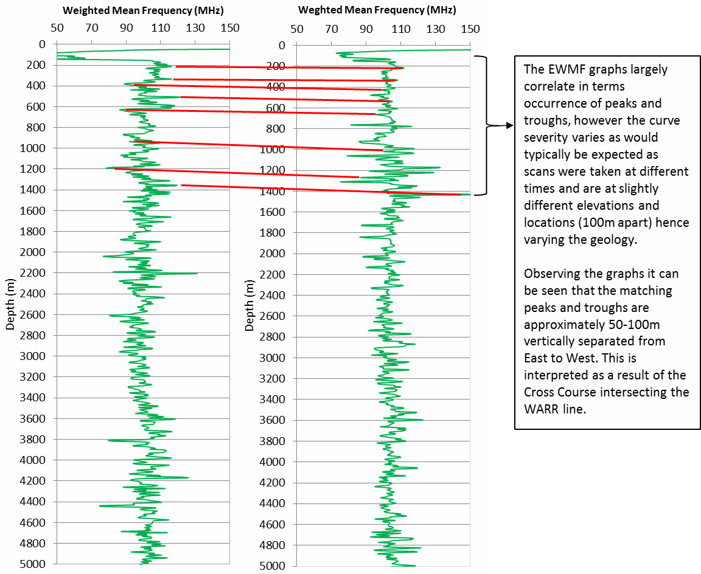
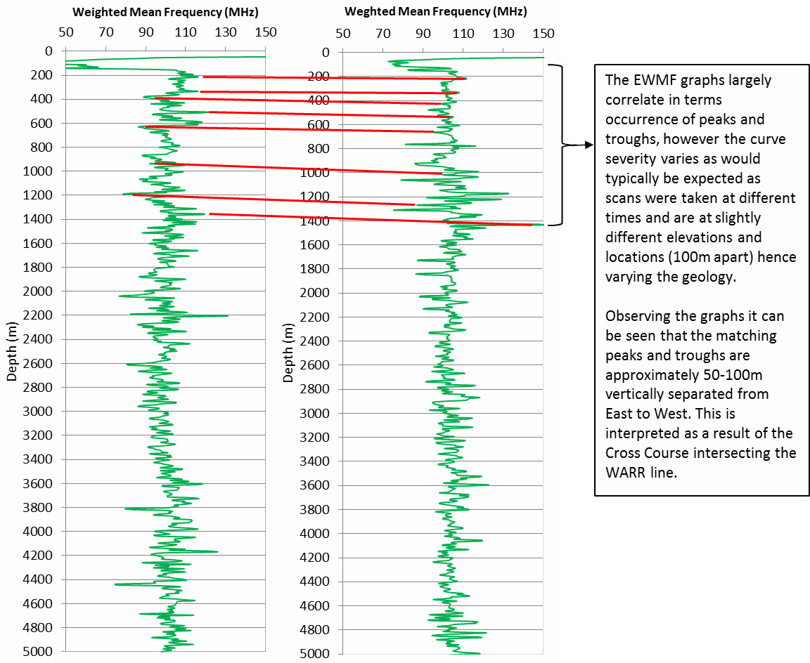

Application of the ADR technology to determine the suitability for Hot Dry Rock (HDR) geothermal resource exploration on a potential UK site.
Project aims
The overall survey objective was to determine the ADR equipment’s suitability to HDR geothermal resource exploration on a potential UK site. All results have been compared directly to existing geophysical and lithological datasets.
The main questions to be answered:
- Can the tool clearly distinguish changes in lithology?
- Can the tool clearly distinguish a permeable zone within the subsurface?
- Are the results within reasonable error?
Exploration/Project challenges
As a part of a larger Adrok research project to determine the usefulness of ADR in potential Geothermal settings, a partnership was struck with the Camborne School of Mines (part of the University of Exeter based in Penryn, Cornwall) and their Geological department. Through this association two ‘test’ geothermal energy projects were identified; one situated at United Downs (site A on Figure 1), and the other close to the Eden project near to St Austell (Site C on Figure 1), both of which are situated in Cornwall, UK. Using various Adrok techniques the sites were scanned with equipment settings allowing for data collection down to at least 5000 metres. Whilst the team were in the Southwest an additional project was carried out at a working china clay pit to identify various geotechnical capabilities (Site B on Figure 1); this work is reported under a separate case study.
The results at both Geothermal sites appear to be broadly similar but only the United Downs location had the scan lines intersecting the major geological features of interest. This site also had the most comprehensive geological data available and as such has been chosen to highlight the capability within this document. Bearing in mind that this was a very short ‘proof of concept’ survey the results are compelling enough to indicate success in each area of assessment and give strong direction for future survey requirements in these types of settings.
 Figure 1: Scanning locations in Cornwall
Figure 2: Scan lines adjacent to the Eden Project
Figure 3: Scan lines at United Downs
Figure 1: Scanning locations in Cornwall
Figure 2: Scan lines adjacent to the Eden Project
Figure 3: Scan lines at United Downs
Geological context
Deep Geothermal energy exploitation was researched considerably at a site in Cornwall from 1971 – 1991. Holes were drilled into the granite bed rock to depths finally reaching in excess of 2.5 km. Cold water was literally poured in so it could be heated by these underlying rocks and the resulting “super-heated” water was recovered. The results and data from these “hot dry rock” experiments were originally designed to help understand the possible rock dynamics and mechanics that these kinds of projects might encounter or cause. However, it became clear that exploiting the immense heat contained within radio-thermal granite settings (where temperatures can be as high as 1700°C), has massive potential for energy generation.
For a project of this kind to be viable a location needs to be found where hot granite exists relatively close to the surface. Deep drilling is massively expensive so a return on investment is highly unlikely if depths exceed 5 km. The geological setting in Cornwall is therefore ideal for this kind of work. Granite plumes extend right to the surface in some locations and the required “hot granite rock” can be found at depths less than 4 km.
Figure 4: Principle of deep geothermal energy extractionEssentially for this kind of system to work two holes are drilled. One allows cold water to be introduced to the ‘hot rock zone’ and the other allows recovery of the resulting superheated water which can then be exploited for heating and power generation (as shown in Figure 4). This ‘hot rock zone’ needs to be capable of accepting the quantities of water required. The geology of the Cornish granite, with the many fractures found within it, is ideal. However, at a few locations in Cornwall there are also major fault lines that extend to the 4km + depths where the required heat can be found. If these deep faults can be tapped in to then an already existing reservoir of superheated water can be extracted; this just then needs to be topped up on a regular basis. Another advantage of exploiting these already existing reservoirs is that the water will have various economic minerals and metals (such as Lithium) dissolved into it. If these resources can be extracted from the solution once the heat has been used then there is a very lucrative additional business model to be realised.
Of course, finding the exact location and pierce point for the drill holes becomes very important. The fault locations and angle of dip at the near surface is relatively well known but knowledge of the structure in the deeper ground is based on assumptions that the dip and zones of permeability remain the same all the way down. If the ADR technology can help identify these zones then the benefits are obvious.
Adrok’s results
From the data collected, a number of Adrok processing techniques were applied, including a newly developed ‘correlation’ plot and a prototype profile scan analysis tool. From the vast amount of information produced, interpretation was carried out using known geological data as a baseline for the ‘truthing’ and ‘calibration’ of the data and to help with understanding the complex changes that were observed.
The geological fault at the United Downs location is known locally as the “Cross Course” and is shown by the dashed black line on Figure 5.
Shown at Figure 14 (P.6) is the downhole variation in Relative Dielectric Permittivity (RDP) for Hole C2 compared against the Energy-log (E-Log), with areas of interest highlighted. Changes in RDP are associated with either changes in lithology (including mineralisation) or changes in water saturation as the RDP of water is an order of magnitude greater than most rocks and so has a large influence on the observed RDP. Low energy response could be indicative of saturation as the dipole nature of water means it is highly energy absorbent. Areas of highly increased RDP and low energy response could together be interpreted as possible zones of secondary permeability in the subsurface host structure. These appear to be located at approximately 1100m, 4100m and 4700m.
In Figure 15 (P.6) both the RDP and energy response with depth are shown but instead considered in terms of variability and groupings of returns. The aim of interpreting on a wider scale is to separate the subsurface into distinct zones to try and identify different geological boundaries.
Inescapably there is a degree of variation within geological bodies, associated with change composition, alteration and mineralogy, however drastically different rock types should stand out.
Visually interpreting the logs, the subsurface has been split into three distinct rock types of anticipated geology.
STARE scans were taken and the EWMF logs extracted at 0m and 100m along the WARR line, East and West of the Cross Course, respectively.
The intended purpose was to see if any change in geology could be observed on either side Cross Course.
The interpretation relies on visually matching the EWMF peaks and troughs between each side of the Cross Course to determine if there is any vertical change between the returned horizons. This can be seen at Figure 16 (P.7).
For this project a new technique was developed where all the individual scans are combined and then the results correlated. The STARES consist of 3 scans at 500 traces, a total of 1500 traces after combining them. It has been assessed that this is probably not enough to obtain a sufficient noise reduction, but some very interesting results were still obtained.
At the scan site (Figure 5), sets of 3 indiviual STARES at 500 traces were taken on the red arrow (100m long) East, Middle, and West. The Cross Course fault is indicated with the dashed black line. The West side of the scan line is at lower elevation than the East side.
Figure 5. Location map showing the individual site survey for hole C2 (red) and the Cross Course (black dashed).Correlation analysis was performed for the 3 STARE sites on scan line (East, Middle, West) after merging the 3 individual STARES taken at each point. Depth conversion was performed using a Dielectric Constant file (DCO) produced by the processing of the WARR scan. In addition, the 3 STARES at the 3 survey points were merged in an attempt to increase signal to noise ratio for the detection of permeable zones. The full results are depicted in Figure 6 below.
 Figure 6: Correlation plots for the C2 STARES. “0m” is East, “50m” is Middle, “100m” is West, and bottom is all merged.
Figure 6: Correlation plots for the C2 STARES. “0m” is East, “50m” is Middle, “100m” is West, and bottom is all merged.
In Figure 7 we show the fully merged results, and have indicated the four largest peaks in each frequency band. The 1102m peak in the 1-5MHz plot and the 4736m peak in the 5-10MHz plot agree with the conclusions from the other interpretation methods. This seems somewhat encouraging, and it would be interesting to process a full set of 10 or 20 STARES at this location.
 Figure 7: Correlation for the merged scans with the four largest peaks indicated.
Figure 7: Correlation for the merged scans with the four largest peaks indicated.
In Figure 8 correlation plots from East to West are shown, and the blue dotted lines indicate possible features that follow the pattern observed in the WMF results, namely common features appearing later when moving west. A major difference here is that the features are only observed east and in the Middle but have disappeared in the West STARE. As the depth location of the fault is not known, we cannot say for certain that the conclusions are therefore correct.
 Figure 8. Correlation from East (top) to West (bottom) over first 1400m.
Figure 8. Correlation from East (top) to West (bottom) over first 1400m.
Two Profile Scans (PSCANS) were taken over the 100m line indicated in Figure 5. They were processed using a prototype of a new PSCAN “productization” utility. Time to depth conversion is done by non-linear warping of the image using interpolation, based on the provided DCO file. In Figure 9 we show the plain image over the frequency band 1-30MHz.
Figure 9. PSCAN vanilla images over frequency band 1-30MHz.In Figure 10 a-c we show the processed images after extracting the phase and applying a de-ringing filter using the singular value decomposition over three frequency ranges. De-ringing level was set by trial and error and by consulting the singular value plots. As the scanline ran East to West, it appears the fault is visible at the correct location, and is contained in frequencies above 5Mhz, as the image which uses 1-5MHz data does not show the feature.
 Figure 10a. PSCAN phase image with SVD de-ringing level 1 over frequency band 1-30MHz. Note the fault around 75-80m.
Figure 10b. PSCAN phase image with SVD de-ringing level 1 over frequency band 1-5MHz. Note the fault around 75-80m is no longer visible.
Figure 10a. PSCAN phase image with SVD de-ringing level 1 over frequency band 1-30MHz. Note the fault around 75-80m.
Figure 10b. PSCAN phase image with SVD de-ringing level 1 over frequency band 1-5MHz. Note the fault around 75-80m is no longer visible.
 Figure 10c. PSCAN phase image with SVD de-ringing level 1 over frequency band 1-10MHz. Note the fault around 75-80m is visible.
Figure 10c. PSCAN phase image with SVD de-ringing level 1 over frequency band 1-10MHz. Note the fault around 75-80m is visible.
In Figure 11 we zoom into the shallower region, where higher frequencies penetrate. There seem to be boundaries at 12m and at 30m.
 Figure 11. PSCAN phase image over first 60m with SVD de-ringing level 1 over frequency band 1-100MHz. Note the boundaries around 12m and 30m.
Figure 11. PSCAN phase image over first 60m with SVD de-ringing level 1 over frequency band 1-100MHz. Note the boundaries around 12m and 30m.
Information and maps were later disclosed by the client (Figures 12 & 13) which show the existence of shallow ground anomalies from old mine workings in the area. Because the maps are 150m South of the scan line, it is not completely clear what we are seeing here, but 12m is close to the adit level that is highlighted.
 Figure 12: Mining Search Plan. Plan veiw
Figure 12: Mining Search Plan. Plan veiw
 Figure 13: Mining Search Plan. Cross Section.
Figure 13: Mining Search Plan. Cross Section.
Conclusions
The conclusions drawn from the interpretations of this blind ADR test of the United Downs site are: Sediments and meta-sediments rich in mineral veins extend from the surface down to a depth of 1800m, underlain by the granite pluton belonging to the Cornubian batholith. Within the granite pluton itself two areas have been identified as possible permeable zones at depths of 4100m and 4700m which could be utilised for a geothermal project. At 1100m there is an area of interest which could possibly be heavily fractured and saturated. The Cross Course intersecting the site was scanned on either side and a vertical offset of between 50-100m identified within the EWMF logs.
Figure 14: RDP and Energy response Figure 15: Grouped interpretation for RDP and Energy

Figure 16: Weighted Mean Frequency Logs.
Figure 15: Grouped interpretation for RDP and Energy

Figure 16: Weighted Mean Frequency Logs.